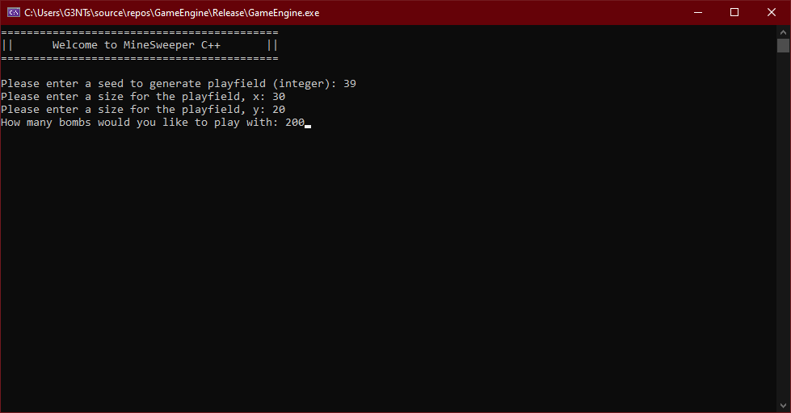

Minesweeper Dev Blog
Posted by Dobbenberg, Wouter on 2024-05-27
Hello,
A while ago now, I Created a Minesweeper game in the Windows command prompt using C++. This blog will take you through the journey of how I achieved this feat, leveraging the Windows.h package and a graphical engine by javidx9, also known as OneLoneCoder.
A while ago now, I Created a Minesweeper game in the Windows command prompt using C++. This blog will take you through the journey of how I achieved this feat, leveraging the Windows.h package and a graphical engine by javidx9, also known as OneLoneCoder.
Setting Up the Graphical Interface
To transform the command prompt into a viable screen for a game, I implemented a low-level graphical interface using ASCII characters. This was accomplished through the Windows.h package and the graphical engine developed by javidx9, OneLoneCoder. This setup allowed the game to render images using ASCII characters, providing a retro yet functional display.https://github.com/OneLoneCoder/Javidx9/tree/master/ConsoleGameEngine
Displaying Characters on the Screen
Instead of using traditional pixels, the game displays regular ASCII characters. This involved creating two screen buffers: one buffer to store the index of each character and another to store the actual character (wchar_t) that would be displayed. The first buffer selects a character from a long string, which is then stored in the second buffer for display. This method effectively simulates pixel data with ASCII characters, creating the game's visual elements.
// two buffer arrays, pField & screen. pField stores pointers.
// screen stores the ASCII characters displayed on screen
pField.resize(nScreenWidth * nScreenHeight, 0);
screen = new wchar_t[nScreenWidth * nScreenHeight];
for (int i = 0; i < nScreenWidth * nScreenHeight; i++)
{
screen[i] = L' ';
}
Initializing the Game Grid
With the display mechanism in place, the next step was to represent the game grid. Players can customize the difficulty by inputting the width and height of the Minesweeper grid and the number of bombs. This input is handled through standard input (std::cin), allowing for a dynamic and customizable game setup. The grid is then initialized based on these player settings.

Generating the Minesweeper Grid
The grid generation involves placing bombs randomly across the grid's x and y coordinates. Each time a bomb is placed, the adjacent tiles' values are incremented by one, indicating the number of neighboring bombs. This setup mirrors the classic Minesweeper logic, where the numbers help players deduce safe tiles.Implementing Mouse Input
To enhance gameplay, mouse events are used to interact with the grid. Adapted directly from javidx9's game engine, the right and left mouse buttons are mapped to reveal a tile and place a flag or question mark on a tile, respectively. This intuitive control scheme makes the game more accessible and engaging.Game Mechanics: Revealing Tiles and Game Over
When a player clicks a spot on the grid, a series of conditional statements determine the outcome. If the clicked tile contains a bomb, the game ends with a game-over animation. If the tile reveals a number between 1 and 8, that number is displayed. If the tile is a zero, a recursive algorithm uncovers all adjacent tiles with a zero value and their neighboring numbers, revealing large swathes of the grid.Player Interface and Feedback
Above the play grid, a small interface provides useful information to the player, including a bomb counter and a timer. The bomb counter decreases each time a player flags a tile as a bomb, helping players keep track of their progress. This interface enhances the player's experience by providing real-time feedback and essential game information.Winning the Game
To win, the player must ensure that the number of unopened or flagged tiles equals the number of bombs on the grid. Revealing all safe tiles or correctly flagging all bombs results in a victory. Conversely, revealing a bomb triggers an explosive animation, signaling the end of the game.

Conclusion and Download
Creating Minesweeper in the command prompt was a rewarding experience, blending nostalgic gameplay with modern coding techniques. The game is available for download via the link below. Enjoy playing and let me know your thoughts!Download